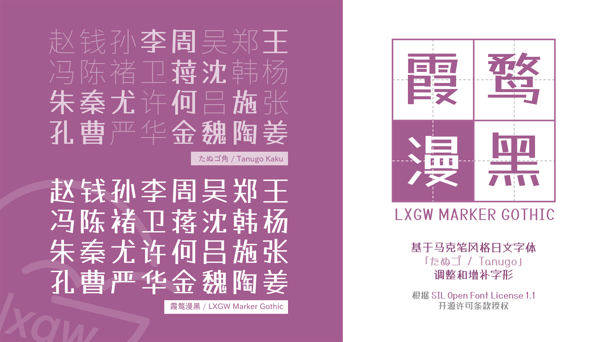

Marker Gothic is a Chinese adaptation of the Japanese font "Tanugo". The design is intended to be easy to use and easy to read, with a fun, cute character. It contains over 13,000 characters intended to cover the display needs of daily use for traditional and simplified Chinese applications.
To contribute, see github.com/lxgw/LxgwMarkerGothic.
